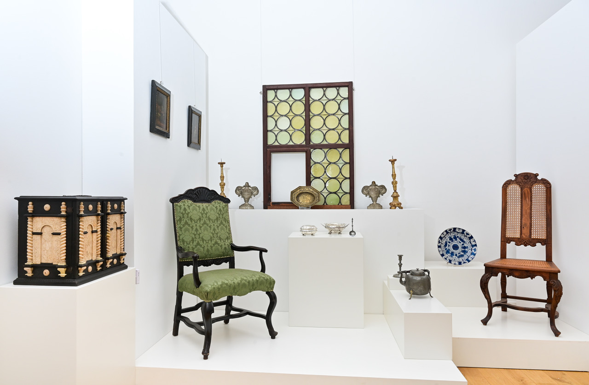
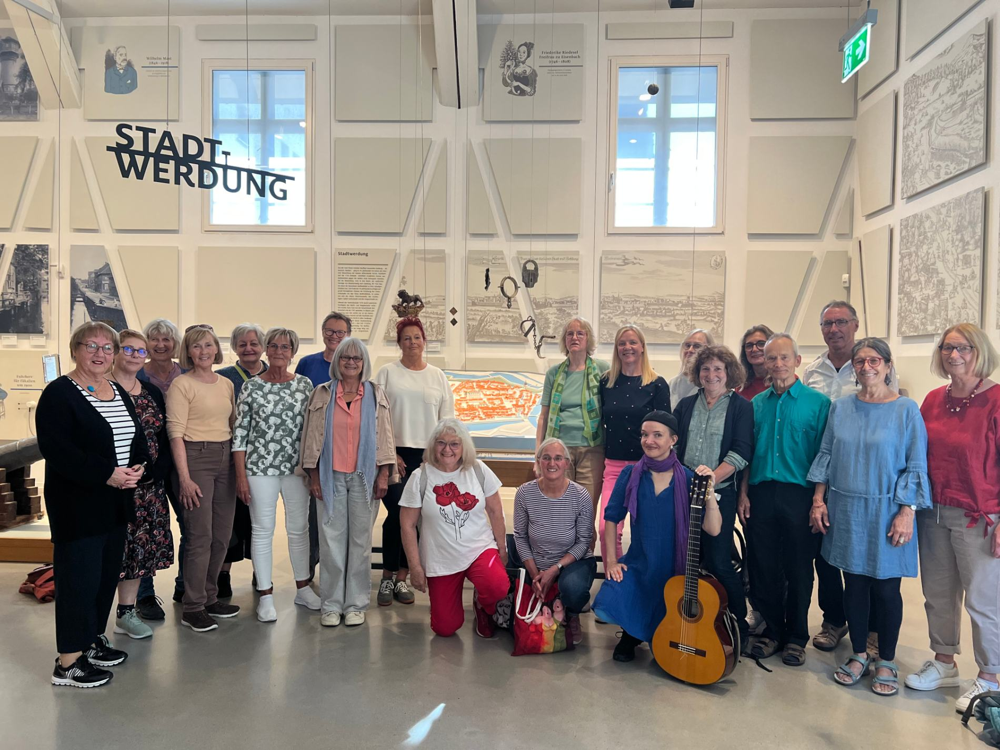

| MUSEUM WOLFENBÜTTEL | |
| November 2026 | |
| Newsletter des Museums | |
| Letzte Gelegenheit: Die Kuratorin führt durch die Sonderausstellung „Die Toten von Wolfenbüttel“ | |
 | |
| © Andreas Greiner-Napp / Museum Wolfenbüttel | |
Nach sieben Monaten endet am Sonntag, 29. November, im Schloss Museum Wolfenbüttel die Sonderausstellung „Die Toten von Wolfenbüttel“. Die gute Nachricht: Am Donnerstag, 26. November, findet noch einmal eine 45-minütige öffentliche Kuratorinnen-Führung mit Museumsleiterin Dr. Sandra Donner statt. Der Rundgang beginnt um 17 Uhr im Foyer des Schloss Museums und kostet 7,50 Euro pro Person. Eine Anmeldung ist erforderlich unter museum@wolfenbuettel.de oder 05331 9246-0. | |
| |
| VERANSTALTUNGEN | |
| Öffentliche Sonntagsführungen durch die Schlossräume | |
 | |
| © BestPixels.de / Museum Wolfenbüttel | |
Am Sonntag, 8. November können die Besucherinnen und Besucher im Rahmen einer öffentlichen Sonntagsführung im Schloss Museum Wolfenbüttel wieder in das frühe 18. Jahrhundert abtauchen und spannende Blicke in die original erhaltenen Staats- und Privatgemächer aus der Zeit des Hochbarocks werfen. Warum besaß der Welfenherzog Anton Ulrich (1633 bis 1714) ein goldenes Bett? Wie skurril war die höfische Gesellschaft im zweitgrößten erhaltenen Schloss Niedersachsens wirklich? Wie wertvoll waren in der Barockzeit eine Tulpenpyramide und eine Ananas und womit hat man sich „bei Hofe“ die Zeit vertrieben? Antworten auf diese Fragen erhalten die Museumsbesucherinnen und -besucher bei einer kurzweiligen, rund 45-minütigen Tour, die um 15 Uhr im Foyer des Schloss Museums beginnt (Preis: 7,50 Euro pro Person). | |
| |
| „Singen im Museum“ wird fortgesetzt | |
 | |
| © Museum Wolfenbüttel | |
Das neue Format „Singen im Museum“ hatte im September 2026 mit etwa 150 Teilnehmerinnen und Teilnehmern eine erfolgreiche Premiere gefeiert. Jetzt steht auch der zweite Termin fest: Am Freitag, 4. Dezember, wird ab 16.30 Uhr erneut unter der Leitung der Musikerin Uta Budzinski im Bürger Museum gesungen. Alle am Singen in der Gemeinschaft Interessierte sind herzlich willkommen. | |
| |
| Museum Wolfenbüttel Schloßplatz 13, 38304 Wolfenbüttel museum@wolfenbuettel.de Tel. 05331 9246-0 |